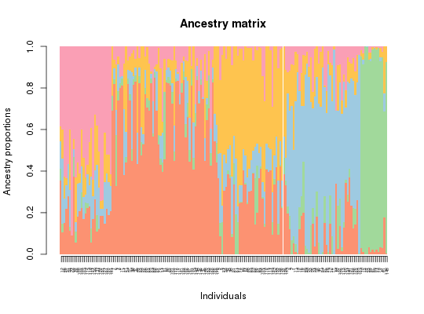

This function displays a barplot representation of the ancestry coefficient matrix. It includes a sort-by-Q option.
# S3 method for tess3Q barplot(height, sort.by.Q = TRUE, col.palette = NULL, palette.length = 9, lab = FALSE, ...)
tess3Q (Q matrix) containing a matrix of ancestry coefficients computed from tess3 or converted from other program formats.NULL, a default list with 8 color palettes is used.barplot.default.A permutation of individual labels used in the sort.by.Q option (order). Displays the Q matrix.
library(tess3r) # Retrieve a dataset data(data.at) # Run of TESS3 obj <- tess3(data.at$X, coord = data.at$coord, K = 5, ploidy = 1, method = "projected.ls", openMP.core.num = 4)#> == Computing spectral decomposition of graph laplacian matrix: done #> ==Main loop with 4 threads: done #># Get the ancestry matrix Q.matrix <- qmatrix(obj, K = 5) # Display a barplot for the Q matrix barplot(Q.matrix, border = NA, space = 0, xlab = "Individuals", ylab = "Ancestry proportions", main = "Ancestry matrix") -> bp#> Use CreatePalette() to define color palettes. #>axis(1, at = 1:nrow(Q.matrix), labels = bp$order, las = 3, cex.axis = .4)